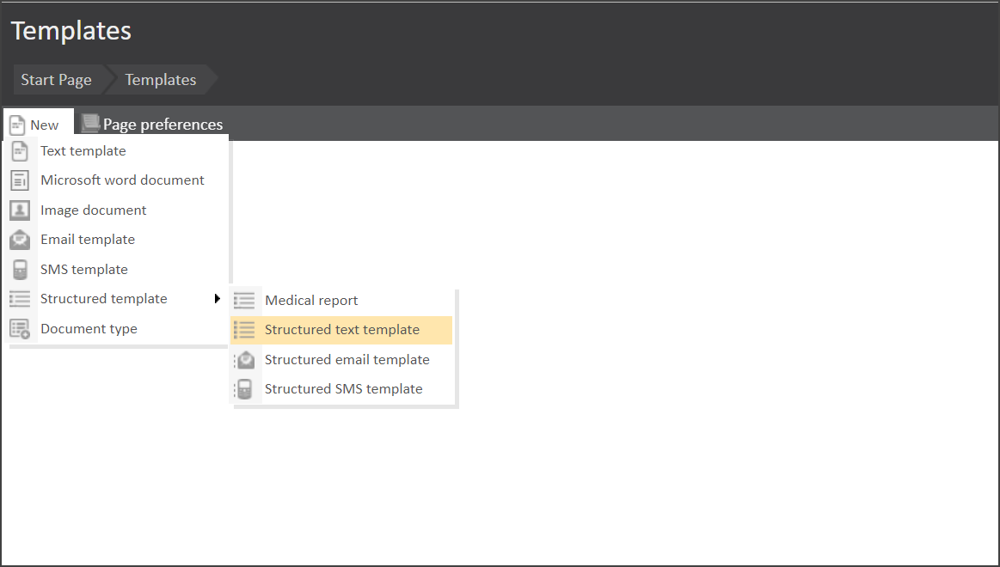
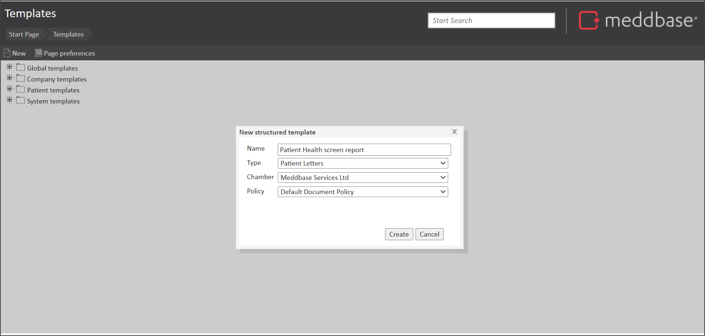
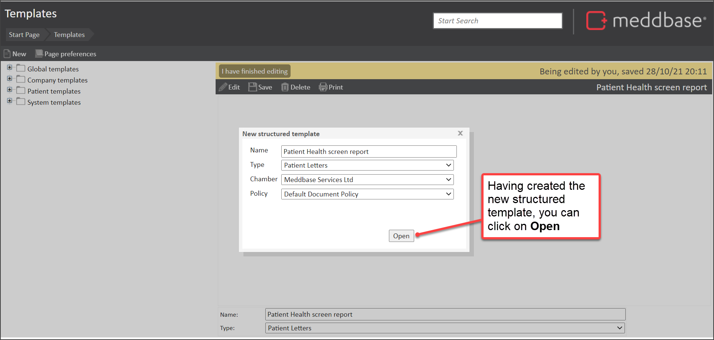
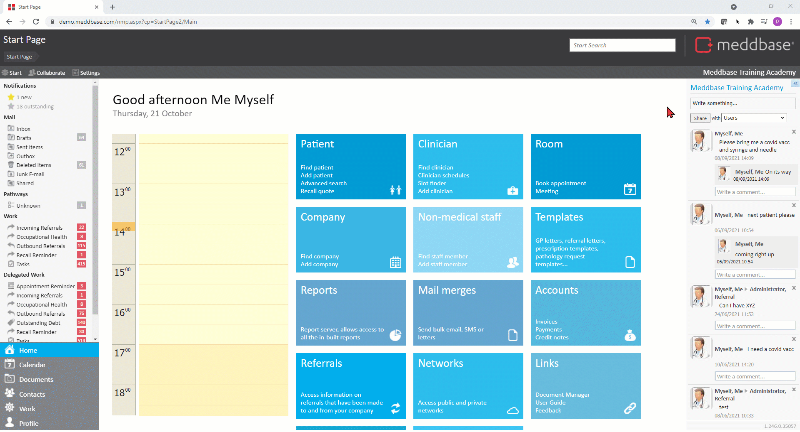
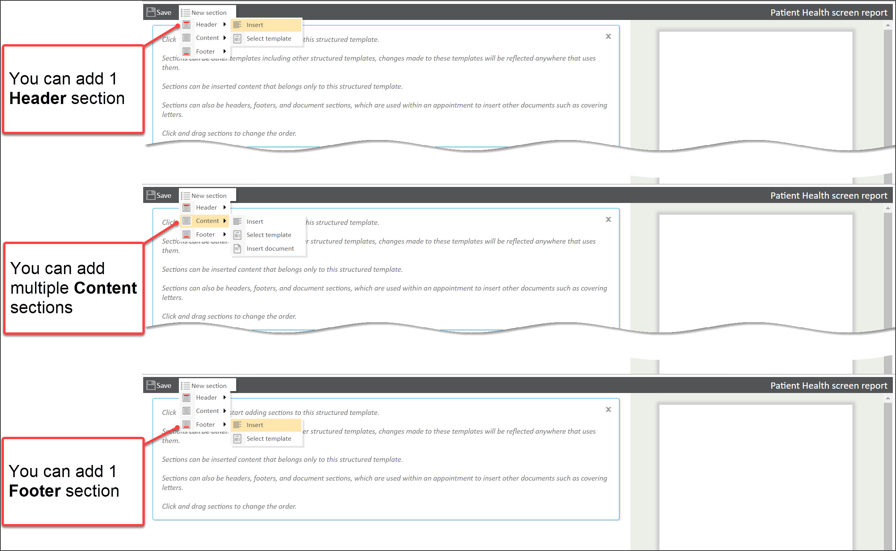
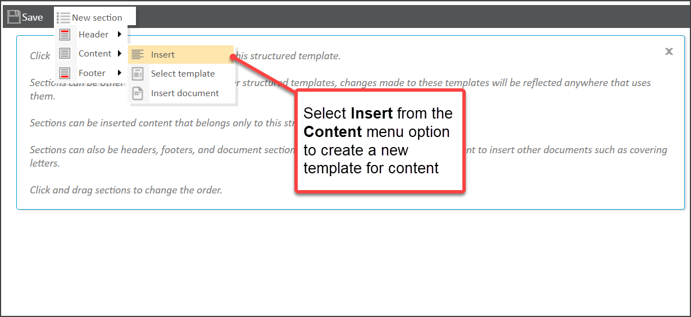
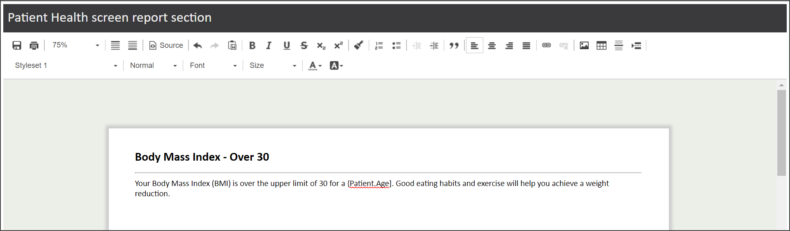
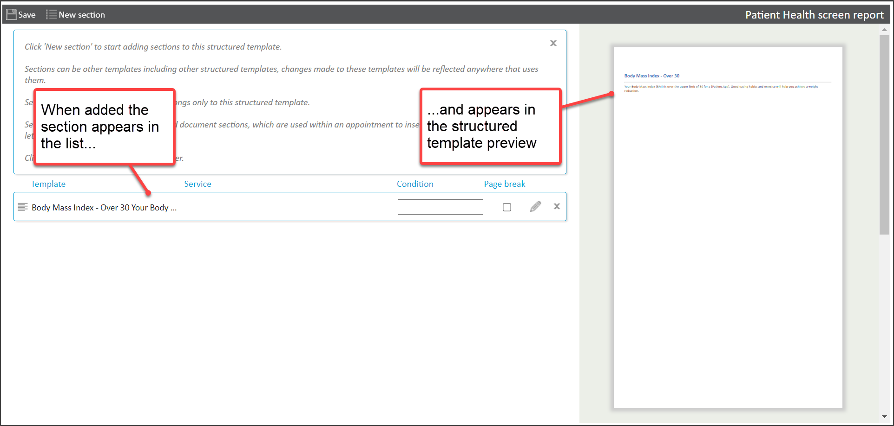
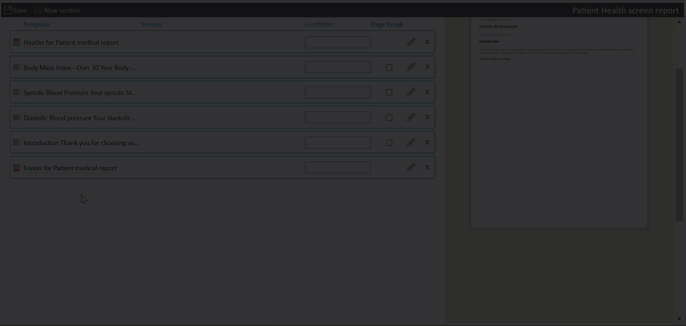
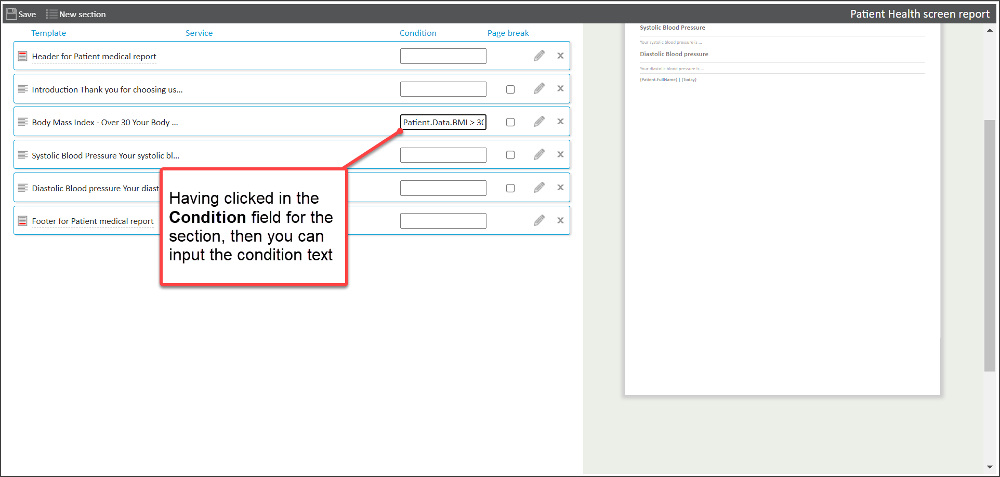

Templates are ''blueprints'' for creating documents. Then can be used in different places within the system. They use template codes to merge relevant information (e.g. about a patient, clinician, or appointment) depending on the context of use.
Structured templates are special templates which:
This article outlines
Before you create a template you should decide:
To create a new Structured Template:
1. From the Start Page, navigate to Templates
2. Click New > Structured template > Structured text template

3. In the New structured template dialog that appears

: Document Types are associated with template Account Types, for example, Patient Templates, Company Templates, etc.
Assigning a Type to a Template determines which Account Type it will belong to and therefore determine where it can be accessed and used e.g. from a Patient Record (Patient Templates account type) or from a Company Record (Company Templates account type) etc.
4. Click Open

This opens the Structured Template editor.
The video below presents a walk-through of creating a new structured template.

The Structured Template editor allows you to add New sections to the structured template.
Within a Structured template there are:

As suggested by the screenshot above and explained in the table below.
| Section & menu sub-type | Explanation of rules and behaviour | |
|---|---|---|
| Header | You can add 0-1 Headers to a structured template. | |
| Header > Insert | Opens the Document Editor and enables you to create a new template there and then for the Header. | |
| Header > Select template | Opens the Select a template dialog and enables you to select an existing template for the header. | |
| Content | You can add as many Content sections to the Structured template as you need. | |
| Content > Insert | Opens the Document Editor and enables you to create a new template there and then for content. | |
| Content > Select template | Opens the Select a template dialog and enables you to select an existing template for the content of the Structured template. | |
| Content > Insert document | Enables you to select a document for content. This option is available for Content sections only. | |
| Footer | You can add 0-1 Footers to a structured template. | |
| Footer > Insert | Opens the Document Editor and enables you to create a new template there and then for the Footer. | |
| Footer > Select template | Opens the Select a template dialog and enables you to select an existing template for the Footer. | |
Using the example of creating a new template for the content section, you can add a new section as follows:
1. From the Structured template editor

2. In the new Document Editor page that appears


3. Click on Save in the top left of the Structured template screen
4. Continue to add in further sections as needed
You may find that the need to adjust the relative position of content sections within a structured template. To do this from within the Structured template editor:
1. Select the section that needs to be moved
2. Drag the section to the position where it needs to live
3. Click Save in the Structured template

When you add Templates and/or Documents as sections to your Structured template, these sections can be displayed according to conditions.
Structured template Conditions use Template Codes that can be evaluated using a condition type against a value. Where the condition is met (i.e. it is 'true'), the section is displayed.
Conditions follow the structure
<TemplateCode><condition type><value>
So an example of a condition applied to a section could be
Patient.Sex="Female "
In this example,
When the structured template is generated by a user and the condition is met, then the section is displayed.
There is a range of condition types that are supported. These types are listed in the table below with examples and explanatory notes.
| Condition Type | Examples | Notes |
|---|---|---|
| Equal To (Text) | Patient.Sex = "Female " Patient.Sex = "Male " | Where text is used, the value needs to be enclosed in double quotes. |
| Appointment.AppointmentType = "Consultation" | ||
| Equal to (Numbers / Dates) | Patient.Data.PH = 5 | Where numbers or dates are used, the value is not enclosed in quotes. |
| Appointment.Fields.ReviewDate = 01/10/2021 | ||
| Not equal to (Text) | Appointment.Forms.Investigations <> "" | This condition would be met where the field value is not empty. |
| Not equal to (Numbers / Dates) | Patient.Data.Pulse <> 200 | This condition would be met where the patient pulse value recorded as data is not 200. |
| Appointment.Fields.ReviewDate <> 01/10/2021 | This condition would be met where the date is not equal to 01/10/2021. | |
| Greater than | Patient.Data.BMI > 30 | This condition would be met where the patient's BMI value recorded as data is greater than 30. |
| Less than | Patient.Data.BloodPressure < 150 | This condition would be met where the patient's Blood pressure value is recorded as data is less than 150. |
| True or False (Checkboxes or Drop Down Lists) | Appointment.Fields.HasHGVLicense.List = "True" | This condition would be met where there is a 'Has HGV License' field on an appointment form and it is ticked. This condition will also work for drop down lists on a Clinical Form where 'Has HGV License' is the field of the drop down and "True" is replaced with the word/phrase in the drop down list. If the field title has special characters e.g $()!* you must not include them in the Condition. |
| True or False (Checkboxes) | Appointment.Fields.HasHGVLicense.List = "False" | This condition would be met where there is a 'Has HGV License' field on an appointment form and it is unticked. If the field title has special characters e.g $()!* you must not include them in the Condition. |
Yes, you can combine multiple conditions. To combine conditions, you can use the following terms:
So using the following example
Patient.Data.BMI > 30 and Patient.Sex = "Male "
A section would only be displayed if a BMI meta field on a clinical form is greater than 30 and the patient's sex is recorded as male.
Another example to create a range is:
Patient.Data.BMI < 30 and Patient.Data.BMI >19
This can be used to help create ranges in which a condition is shown.
To add to a condition for a section, from the Structured template editor
1. Click in the Condition field for the relevant section
2. Type in the condition text

3. Click on the Save button in the top left of the Structured template editor
The condition is applied for the section.
It is very important that the logic behind Template Codes being used in the correct context is preserved throughout all sections of the Structured Template.
For example, if the intention is to use the template on a Patient Record, but template sections contain template codes evaluating company information, the document generated will contain errors.
To add some further context, you may be interested in the following articles and sections